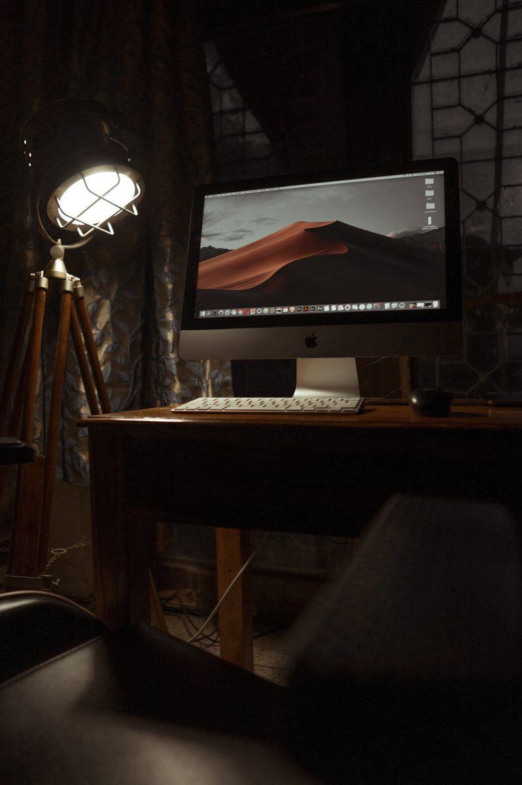
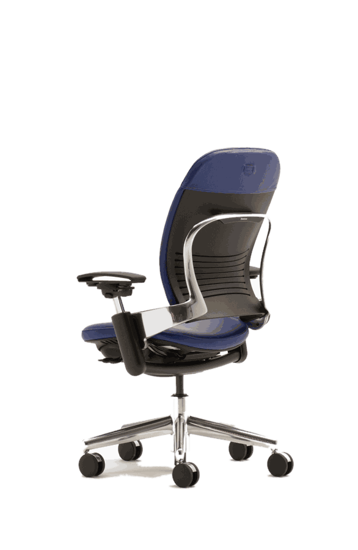

SpatialFlowYour space,
designed first.
Every layout is planned around real dimensions, power and clearance — so you commit to furniture only once it fits.
A better way to plan a room
SpatialFlow turns a spare room, garage corner or studio nook into a custom productivity pod — planned to the foot, priced to the dollar, before you spend anything.
Plan against an actual 8×10 or 10×12 ft footprint, not a guess.
Outlet counts and clearance warnings update as you place each item.
Export a priced blueprint the moment your layout feels right.

Furniture that moves with you. Every catalog piece carries real footprint, cost and power draw — so a layout that looks right is also one that works.
A better way to plan
Plan against an actual room footprint in feet — every piece is bounds-checked so a layout that looks like it fits actually does.
Outlet counts and clearance warnings recompute on every move, so you catch a cramped or under-powered layout before it's built.
An itemized shopping list with a running total, exportable as a JSON blueprint — right from the planner page.
No backend beyond an optional account for cross-device saves. Signed out, your layout is saved locally and restored the next time you visit.
Open the workbench, place your first piece, and watch the cost, power and spacing add up in real time.
Save your layout to your account.
Don't have an account?